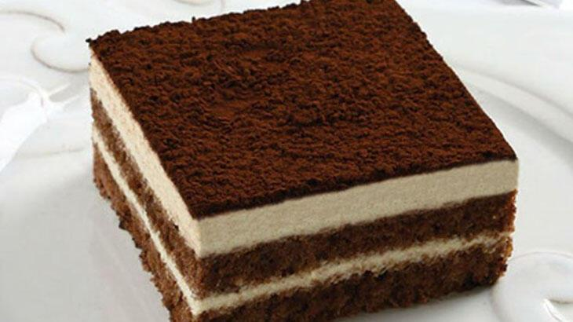

Tiramisu Tarifi
Bir İtalyan Tatlısı olan tiramisu gerçeğinde mascarpone denilen bir peynirle yapılmaktadır. Günümüzde ise labne peynirle de yapılan tiramisu herkes tarafından çok sevilmektedir. Kahve ile ıslatılan keki, üzerine serpilen kakaosu ve içerisinde labne peyniri karışımı kreması ile damaklarınızda vazgeçilmez bir lezzet olacak.